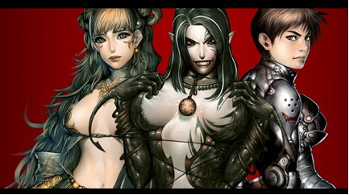
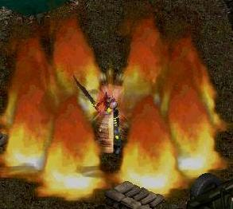
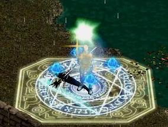
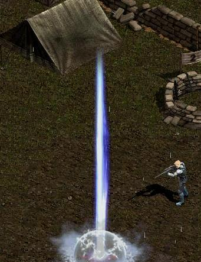
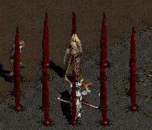
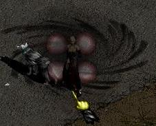
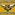
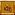
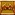
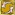

[Dark
Eden]
General
Class & Race Guide

Presented
to you by:
Abdul H. A
DonVito
Available Races
& Classes
Slayers
Slayers have preset
classes depending on the weapon & skills you learn from NPCs available in
the Guilds in Eslania, your starting point.
Defender
– Swordsman – Wields a One-Handed Sword & Shield
Splitter
– Blader – Wields a Two-Handed Blade
Bishop
– Healer – Wields a Cross
Granter
– Enchanter – Wields a Mace
Heavy Shooter – Gunner – Wields any type of
Gun

Available Races
& Classes
Vampires
Vampires start off
the same.
The way you
distribute your status points determines your class.
Vampires can learn
all the skills available to them, but certain skills are made for Mage Type
Vampires, while others are made for Melee Type Vampires.
Melee - Agile Fighter
(The Aggressor) (Dexterity Based)
Melee - Heavy Fighter
(The Front Line Defender) (Strength Based)
Mage - Agile Caster
(Sage Vampire) (Dexterity, Intelligence Based)
Mage – Heavy Caster
(Warlock Vampire) (Intelligence Based)


Available Races
& Classes
Ousters
Ousters start off
the same.
The way you
distribute your status points & skill points determines your class.
Fire Ouster (The Warlock Ouster)
Water Ouster (The Healing Ouster)
Earth Ouster (The Crippling Ouster)
Combat Ouster (The
Aggressor) (Dexterity Based)
Combat Ouster
(The Front Line Defender) (Strength Based)
Attribute
Information
Attribute Name:
Description +Minimum ~ Maximum Bonus
Strength: Increases
Protection, HP & Physical Damage +1~+5
Dexterity: Increases
Defense To-Hit & Attack Speed +1~+5
Intelligence: Increases
MP, MP Regeneration & Magical Damage
+1~+5
All Attributes:
Adds Strength,
Intelligence & Dexterity +1~+3
To-Hit: Effects the accuracy of the
character +1~+5
Defense: The evasion rate of the
character +1~+5
Protection: The physical damage absorption
rate +1~+5
Curse Resistance:
Reduces the
effectiveness of Curse category skills +5, +10, +15
Blood Resistance: Reduces the effectiveness of
Blood category skills +5, +10, +15
Acid Resistance: Reduces the effectiveness of
Blood category skills
+5, +10, +15
Poison Resistance: Reduces the effectiveness of
Blood category skills
+5, +10, +15
All Resistance: Includes Curse, Blood, Poison
& Acid Resistance
+1, +3, +5, +7, +9
Attack Speed: Increases the attack rate of the
character +5, +10, +15, +20, +25
Damage: Increases the physical damage
of the character +1~+5
Critical: Increases the Critical Rate
Chance of the character +2, +4, +6, +8, +10
Vision: Increases the Characters Filed
of View +1~+3
HP Steal: Allows the character to Steal HP
with each attack by a high probability +1~+3
MP Steal: Allows the character to Steal HP
with each attack by a high probability +1~+3
HP: Increases the characters Health
Points +3, +6, +9, +12, +15
MP: Increases the characters Mana
Points +5,
+10, +15, +20, +25
Luck: Increases the characters chance
to get better drops +1, +3 +5
Red: 1 STR Points
Effect on Character’s Status
Green:
1 DEX Points Effect on Character’s Status
Blue:
1 INT Points Effect on Character’s Status
|
Race |
HP |
MP |
Defense |
Protection |
To-Hit |
Damage |
|
Slayer |
3.5 |
2 |
.5 |
1 |
.5 |
.25 |
|
Vampire |
7,2,1.5 |
- |
.5 |
1 |
1 |
.25 |
|
Ouster |
4.5, 1.5,
.5 |
1 |
.5 |
1 |
.5 |
.25 |
Race & Class Story,
Game-Play, & Stereotypes
Slayer
Race
Slayers
were formed by E.V.E; “Elite Vampire Exterminators”. The title Slayers was
formed by the Vampire Race when they realized that an elite number of Human
beings were slaying younger Vampires. Slayers
are known to almost never be alone. They seem much weaker when they fight
alone, but when grouped with different classes Slayers fight much better and have the ability to work together to eliminate the most
dangerous threat in the world of Helena. A group of Slayers is known as “The
Unstoppable Force” by Vampires, which is why these predators lure & seduce
Slayers to be alone as much as possible.
Vampire
Race
Vampires,
the unholy beings, multiply day & night and have an outstanding ability to
resist the light. Gilles, Tepes & Bathory, Lords
of the Vampires, started infecting Human beings and those who were infected
& transformed were off on missions to infect others with demonic blood. Vampires are known to usually be alone most
of the time. They have an arsenal of skills to survive the harshest conditions.
Vampires do not have souls, and thus, they do not use MP / EP (Ousters MP)
instead, they use their own blood. They regenerate their HP in a very rapid
rate and can suck the blood from monsters if they need HP.
Ouster
Race
Ousters
were born when peace was found between a Male Slayer & a Female Vampire. This
couple grew fond of each other, shared their views of the perfect worlds and
went off to leave technology & demonic rituals to find a place of peace
& nature. This couple made love and after a while in a cave, the Vampire
gave birth to a very unusual relic that resembled a human. From the shock of
the vampire giving birth to an inanimate object, the Slayer ran and was charged
with treason and was executed. The female Vampire was left alone with the relic
and decided to revert back to her unholy traditions.
Right when she was about to cast an unholy spell to seal the cave, the relic
radiated with luminous light and exploded into millions of pods with live
female fetuses that later grew to be fully developed & powerful women. The
vampire was killed by the explosion & so Ousters were born. Ousters
are always out numbered but
the force of nature & the superior genetics allows them to become stronger
than both slayers & vampires alone. They live up to a promise to bring
peace and avenge their parents, even if it means to kill other Vampires &
Slayers mercilessly with their higher understanding of Elemental Magic &
Physical Force.
Slayer
Classes
The Defender
The
Defender is usually the front line warrior. With quick reflexes, the ability to control
lightning & a shield to protect them from attacks they are known to be the
most well rounded Slayer. Defenders are usually in the
front lines of battles directing & protecting his group.
Advantages:
-Fast Attacks, which allows the Defender to
change tactics quickly.
-Good Defense, which gives the Defender a chance
to avoid more physical attacks
-Good Protection, which allows the Defender to
endure more physical damage
-High HP, for longer longevity in the battlefield
-Good Critical Rate, this means you have
a higher chance of doing 150%-250% (Proven
& Tested) of the normal damage & knocking back your enemy at a much
higher rate with your main skill, Infinity Thunder Bolt.
Disadvantages:
- Low To-Hit, due to the fast
pace tactics, the Defender has a harder time to focus on the accuracy of
the attacks
- Average Damage, due to the fast
pace tactics, the Defender has a harder time to output strong, heavy
attacks like the Splitter
Typical Builds of a
Defender
Dexterity
Based Defender – 400~500 Dexterity, Rest Strength
Advantages: High To-Hit & Evasion
Disadvantages: Lower HP & Protection, & Slightly
Lower Damage
“I highly recommend this build for Defenders.
After you get promoted to 151 you will have the ability to freely distribute
status points. Add 300-400 Dexterity & the rest to Strength. This is one of
my favorite slayers to play since they have great skills, speed & if built
correctly, survivability & accuracy which is what a melee should all be
about”
Strength
Based Defender – 200 Dexterity, Rest Strength
Advantages: High HP & Protection, &
Slightly Higher Damage
Disadvantages: Low To-Hit & Evasion
Preferred Set
1) Curse
Resistance 120+, All Resistance 50+, 8-~12+ HP Steal, 3~5 MP Steal
2)
Damage & To Hit for same race PvP
Slayer
Classes
The Splitter
The Splitter
is usually the most valuable damage dealer. They have the ability to make every attack
count because the damage & effectiveness of the attack is so high. They
stand in the frontlines ready to take on any challenge. They are found to be in
the front lines along side with the Defender, making up for the Damage.
Advantages:
-Powerful Attacks, which allows the Splitter to cleave
through the enemies HP
-Good Defense, which gives the Splitter a chance
to avoid more physical attacks
-Good Protection, which allows the Splitter to
endure more physical damage
-High HP, for longer longevity in the
battlefield
-Decent To-Hit, because the Splitter has
a much slower attack speed rate, they are able to
focus on their targets more
Disadvantages:
- Very Slow, due to the heavy damage, the
swing of the giant blade slows the Splitter down
- High MP Consumption, MP exhausts quickly due to the
strong force of the skills the Splitter uses
Typical Builds of a
Splitter
Dexterity
Based Splitter – 400~500 Dexterity, Rest Strength
Advantages: Very High To-Hit & Evasion
Disadvantages: Lower HP, Protection, & Slightly
Lower Damage
Strength
Based Splitter – 200 Dexterity, Rest Strength
Advantages: Very High HP & Protection,
& Slightly Higher Damage
Disadvantages: Lower To-Hit & Evasion
Preferred Set
1) Curse
Resistance 120+, All Resistance 50+, 8-~12+ HP Steal, 9~10 MP Steal
2)
Damage & To Hit for same race PvP
“I never really liked Splitters; the
game-play style is not my type. They hit really hard,
but way too slow for me, and the MP usage is insane. For the most, Dexterity
Builds are mainly for PvP, and Strength Based builds are for PvM, so make your choice. I would prefer the Dexterity
Based build because I hate missing”
Slayer
Classes
The Bishop
Bishops
are saints blessed with magical powers discovered by the powerful sages who
worked with E.V.E. They have the ability to give life
to dead Slayers, resist & cure all sorts of demonic curses, and the ability
to support the group by using mystical healing skills and powerful magical
spells. Bishops are found in the middle
lines of combat supporting the back & front lines with magical attacks.
They may be found even in front of the Splitter & Defenders at advanced
stages. Although this class may be powerful, they will almost always depend on
others for assistance to attain levels quickly.
Advantages:
-Powerful Magical Attacks, which poison the blood of
Vampires & Ousters with Silver, which blocks their HP from regenerating past
the Silver infected HP
-Healing Spells, Ability to Regenerate HP quickly
& survive longer
-Increased Resistance, of Vampires demonic curses
-Outstanding Magical Resistance, Denial
Magic allows the Bishop to be the last survivor versus
any type of mage
- Highest Survivability, if built & played correctly
- One of the most feared Slayer classes, due
to the arsenal of skills
- Unstoppable with the help of a Granter
– Video to prove it:
Disadvantages:
- Very Slow & Bad Versus Monsters, the skills provided for the healer aren’t the
strongest versus monsters
- Dependence on Others, you will almost always be in
parties if you want to level effectively
Typical Builds of a
Bishop
Intelligence
Based Bishop – All Intelligence
Advantages: Higher Magical Damage
Disadvantages: Horrible Survivability, Low HP,
Low Protection
Strength
Based Bishop – All Strength
Advantages: High HP & High Protection
Disadvantages: Lower Magical Damage
Slayer
Classes
The Bishop
“This is my favorite class. It
requires a lot of work & patience but this class
is bound to be the best in PvP versus other races... I highly urge and
recommend you to play this class only as a Strength
Based Bishop”
“A very important note to all
future Bishops; on high rate servers, you may just
want to level with a cross and add all your attribute points to strength. On
Low – Mid rate servers, you will have to party with other members, wear a sword
and shield and let others attack to increase your base STR. When you attack,
you will raise INT. You will have to find a way to balance this and keep your
STR as high as you can but with enough INT for MP & for it not to level so
quickly.
Preferred Set
1) Curse
Resistance 100+ / All Resistance 70+, 8-~12+ HP Steal, 3~4 MP Steal
Slayer
Classes
The Granter
Granters
are saints blessed with magical powers discovered by the powerful sages who
worked with E.V.E. They are the ultimate support of all Slayers. They have the ability to see through Darkness, Increase Physical
Damage, Defense, Protection, and HP & MP and they have outstanding Magical
Damage.
Granters are found in the middle
lines of combat supporting the back & front lines with magical attacks.
They are also found soloing most of the time in advanced stages.
Advantages:
-Powerful Magical Attacks, which poison
the blood of Vampires & Ousters with Silver, which blocks their HP from
regenerating past the Silver infected HP
-Rotten Apple, Level 150 Skill, “One
Rotten Apple Ruins the Whole Batch”.
This
skill allows a Granter to kill off any monster close to another monster that
has nearly no HP left with just one click. Making the Granter one of the best
Solo characters
-Fame, fame gets you the good items.
Rotten Apple kills high level monsters in 1 hit so you will be able to build up
your fame higher than any other class in the server.
-Effective in PvM,
due to the high Magical Damage & Rotten Apple, you will be able to kill
anything with very little effort. This depends in your game-play style.
- Highest Survivability, if built &
played correctly
- Unstoppable with the help of a Bishop
- Best In-Game Buffs & De-Buffs
Disadvantages:
-Inability to Survive Long Without Aura
Shield, Aura shield allows the Granter to use his spirit instead of his
body to defend him, which means the MP will get damaged instead. If your MP
depletes your aura shield will be off and you are open to most attacks that
will hurt & possibly kill the Granter very quickly.
-Requires Professional Players, this is
truly a class made only for the pro’s or people that
are willing to fail A LOT before being able to become decent at playing as a
Granter
Slayer
Classes
The Granter
Typical Builds of a
Granter
Intelligence
Based Granter – All Intelligence
Advantages: Higher Magical Damage, Higher MP, High MP
Regeneration
Disadvantages: Horrible Survivability without
Aura Shield
“This is one of the most confusing but effective
classes I have played on Slayers. This is one of my least favorite classes due
to the fragility of the character at low levels. With enough leveling &
dedication, this will be one of the strongest classes in the entire game even
against other slayers”
Preferred Set
Curse Resistance
120+, All Resistance 50+, 3~5+ HP Steal, 6~7+ MP Steal
Slayer
Classes
The Heavy Shooter
E.V.E
started off with this very class. They are the foundation of the Slayers army.
Heavy
Shooters are the marksmen of the Slayer Race, and have the
ability to use powerful Submachine Guns, Fully Automatic Rifles, Sniper
Rifles, or Shotguns.
Heavy Shooters are found at the
back of the combat lines shooting their enemies from a long distance with
deadly force, speed & accuracy and with enough cover to protect them from
their fragility.
Advantages:
-Powerful Attacks, which poison the
blood of Vampires & Ousters with Silver, which blocks their HP from
regenerating past the silver infected HP if the Heavy Shooter uses Silver
Bullets
-Very High Critical Rate this means you
have a higher chance of doing 150%-250% (Proven
& Tested) of the normal damage & knocking back your enemy at a much
higher rate with your skills
-Turret Form, Heavy Shooters can build an
immobile turret and fire from it, giving them a great increase to physical
& magical resistance and also increasing their
damage, critical rate, HP/MP Steal rate drastically. They will also not be effected by the vision loss that is caused by Darkness
-Highest Defense, amongst other slayers
Disadvantages:
-Low HP, the low HP is the reason why
gunners are not popular. They depend solely on their gear & defense to
protect them from physical & magical damage.
Typical Builds of a
Heavy Shooter
Dexterity
Based Heavy Shooter – All Dexterity
Advantages: Higher Defense & To-Hit
Disadvantages: Lower HP, Protection and Damage
Strength
Based Heavy Shooter – 400-500 Dexterity, Rest Strength
Advantages: Higher HP, Protection, and Damage
Disadvantages: Lower Defense &, To-Hit
“I really dislike this class the most. They
have the lowest survivability in the battle field and
are more of a support class for damage .A very fun
class to play as a beginner”
Preferred Set
1)
Curse
Resistance 110+, All Resistance 60+, 4-~10+ HP Steal, 2~5 MP Steal
Vampire
Classes
Melee Vampire Noble
Gilles
De Raise, the Head Lord of the Vampire Council was the ultimate melee vampire.
He trained ever since he had lust for blood and immortality. Through his years
of experience, he recognized that the ultimate weapon for a vampire would be
their own body. A Melee vampire focuses on using their rage, hatred & pity
to eliminate all in their path. These Vampires use basic tactics to overcome
their threats and to endure Slayer’s destructiveness.
Typical Melee
Vampire Noble Builds
Dexterity
Based Melee Vampire Noble - 100~200 Strength, Rest Dexterity
Advantages: High Defense, High To-Hit
Disadvantages: Average
Damage, Low HP, Very weak against Mage Enemies.
“A Pure Dexterity Based Vampire
was my least favorite type of Melee Vampire Noble class to play. The Defense &
To-Hit was very high which was amazing for PvP but every hit that did land on
it would hurt twofold. I think that the best type of character would have a
good balance between Strength and Dexterity. With at least 200 Strength, I
believe that this Melee Vampire Noble would be a well-rounded rounded character”
Strength
Based Melee Vampire Noble - 100~300 Dexterity, Rest Strength
Advantages: High Damage, High HP, High
Protection
Disadvantages: Low To-Hit, Low Defense
“These types of Vampire Noble’s
are a very great alternative to go, hunt items, and kill higher level monsters.
They make a great distracting and front line defense, and
are just brutal versus mages. The lack of To-Hit really put me off but with the
Vampire Curse: Mephistopheles, a Vampire’s To-Hit increases quite
significantly. With the right amount of Dexterity & Strength, dedication to
leveling & a good, set this would be one of the best characters in the
game”
“A professional Melee Vampire Noble uses all
the skills he can, even magical ones. Although they may not be as effective as
a Mage Vampire, they still can save the vampire from Holy or Silver Infected or
even Elemental magic. The Darkness Skill is a good way to avoid these attacks
by concealing yourself into dust. The Meteor Strike skill is very difficult to
cast with low intelligence, but with enough determination, you can use it to
kill off high defense characters.
Preferred Set
Curse Resistance 100 / All
Resistance 60+, 20+ HP Steal
Vampire
Classes
Mage Vampire Noble
Bathory,
the evil witch Vampire had a very fragile body but her
soul & thoughts were far more corrupt than anyone else’s, and this is what
gave her the advantage in the battle field. Taking
advantage of her cursed mind, rituals and spirit she developed the strongest,
most fearsome kinds of Magic. She used all kinds of treacherous elements such
as Curses, Poisons, Acids, Blood & hell-bound elements to make any Slayer
in her path flee from the filth & destruction of her fury. Vampires that
lusted for blood & destruction followed her path.
Typical Melee
Vampire Noble Builds
Dexterity
Based Mage Vampire Noble
240
Dexterity, Rest Intelligence to at least 500 & some Strength in later
levels
Advantages: High Defense, Very Versatile
Character, Low Cool Down on Skills
Disadvantages: Requires
Professional Players, Average Magical Damage
“This is my specialty out of all
the Vampire Noble categories. They can do anything, and they can be immortal by
playing cheap tactics. This is the perfect character for those who really like
versatility in skills & tactics & teasing their enemies. This type of
Vampire is as good as the player, literally. Some characters like Slayers have
preset tactics, but these types of Vampires don’t, which makes them very hard
to predict. It stands no chance against a large party of slayers, but it is one
of the most outstanding PvM and 1:1 PvP characters”
http://www.youtube.com/watch?v=xHwRCol3tgA&feature=related
Intelligence
Based Vampire - All Intelligence
Advantages: High Magical Damage, Highly
Effective Magical Spells
Disadvantages: Low Defense, Low Protection, Low
HP, Low Survivability, High Cool Down on Skills
“This type of Vampire is my least
favorite. The reason being is that sooner or later, your damage will reach a
maximum & people will develop sets that were made to be against your main skills; Resistance Sets. They perform the best when the
server is new, but at higher levels & later staged in the server they will
be very vulnerable. Your main target is 500 Intelligence, and you can get that
with the Dexterity Based Mage Vampire Noble if you level enough. You will
probably give up on this character before you reach a very high level because
the survivability is horrible in PvP & PvM.
Preferred Set
Curse Resistance 100+ / All
Resistance 60+, 20+ HP Steal
Ouster
Classes
Fire Ouster
Ousters
that were born into nature blessed their bodies, minds, souls with the elements
that suited their personalities the best. Fire Ousters are extremely aggressive
& impatient like the Fire Goddess, Miga. The burning passion of revenge is
like in inferno in their hearts and the rage will never stop for their betrayal
from both Vampires & Slayers. Fire
Ousters specialize in magical attacks that spread like wild
fire & burn their victims mercilessly. These ousters deal the most
damage out of all because they have 5-6 skills that deal mostly deal damage
over time.
Advantages:
Highest Damage Output In the Game:
This
Ousters dishes out so much damage because of the following:
Beat
head + Magnum Spear Combo = Approximately 550 Damage/Combo
Ring of
Flare = 40~70 Damage/Hit
Fire
Elemental = 60 Damage/Hit
Prominence:
2000+ Damage over time
Hell
Fire: 1600+ Damage over time
Fierce
Flame: 850 Damage over time
Levels
the Fastest
Solo Character: Do not need to depend on anyone
for basic leveling or PvP
Disadvantages:
Complex Game-Play:
Between keeping
your buffs up, building right tactics versus each character & attacking, it
gets messy if you’re new to the game
Low survivability without RA: Reactive Armor cuts all incoming
damage in half. Now that you have no damage modifier…surviving will be a lot
harder
Darkness: Darkness screws over a Fire
Ouster the most, most of their important attacks are single target, and when a
Vampire hides from them, vampires will have a greater chance of avoiding all
your attacks.
Silver Intake: Silver Intake is very painful.
Slayers will fill your HP with silver very quickly causing you to loose precious HP in the battle field
Complex Set: These are the worse characters to
build a set for. You NEED high HPS, EPS, All Resistance and Curse Resistance to
play comfortably
Ouster
Classes
Fire Ouster
Typical Fire Ouster
Builds
Non-RA Hybrid Fire Ouster
(This is the only type I will
cover, because RA is fixed on this server)
400
Intelligence, ½ Dexterity & ½ Strength (100/100. 150/150. 200/200)
Advantages: High Magical Damage, Good Defense,, Can be great at PvP & PvM,
can train at harder areas at night
Disadvantages: - Requires High Level Players, Low
HP, Low Protection
“These types of Ousters are very
complicated to play. Fortunately, these are my favorite & most of the time,
the only Ouster I ever make. They have an amazing capability of surviving great
because of Ring of Flare that steals HP. They have amazing damage at 400 INT.
They are simply the most feared class second to none. They are victims of
Darkness & Yellow poison though, which makes a DEX/INT Vampire their main
threat. A healer will be very hard to defeat without RA as well. If you build
your character right and follow the proper skill tree, I believe you would be
able to defeat healers but it will be a long fight.
Non-RA Strength Fire Ouster
(This is the only type I will
cover, because RA is fixed on this server)
400
Intelligence, Rest Strength
Advantages: High Magical Damage, High
Protection, High HP, Best at PvP
Disadvantages: Low Defense, Can’t
train at night even in Roahm 2/3 at higher levels
Preferred Set
Curse Resistance 100+ / All
Resistance 70+, 10+ HP Steal, 4+ EP Steal
Ouster
Classes
Water Ouster
Ousters
born with a more conservative & passive personalities that mimic the ways
of Nizle, the Goddess of Water & Ice. Water Ousters warm & soothing touch can
heal, cures evil curses & revives fallen sisters. When in danger,
Water Ouster’s soft clear water turns into sharp ice crystals that cut through
even the toughest armors.
Advantages:
Healing & Resurrecting Capability
Heals Silver
Chances of Critical Magic: Critical Magic is a very
powerful critical force that effects magic spells only. When this skill is at
the maximum, spells have a high chance to knock back the enemy and do 250% the
regular damage
Disadvantages:
Cannot Heal any status effect
except Paralyze
Very Slow Game-Play:
Since Waters do
not have as many aggressive skills as a Fire Ouster, they usually end up
struggling in leveling or grouping up with other Ousters to hasten their
progress
No HP / EP Steal Capability: This makes it harder for water
ousters to survive. Also, because they usually have low Intelligence &
skills that have a high EP costs you will find
yourself running out of EP quickly
Typical Water
Ouster Builds
Non-RA Water Ouster
300
Intelligence, Rest Strength
(This is the only type I will
cover, because RA is fixed on this server)
Advantages: High HP, High Protection
Disadvantages: Low EP, Slightly Lower Magical
Damage
“Water Ousters are the Bishops of
Ousters. They are very fun to play if you have the patience to get to 130 very
slowly. Even after that leveling isn’t the greatest but Water Ousters are very
powerful in the end. Having more than 300~400 Intelligence on any ouster is
useless because Ousters need to focus on survivability more than damage.”
Preferred Set
Curse Resistance 100+ / All Resistance
80+
Ouster
Classes
Earth Ouster
Ousters
who believed in tactics in the battle field followed
the way of Gnome, the Goddess of Soil. These
types of ousters use crippling magical & tactical fighting to slow down the
enemy, bind them to the earth, or strike them with powerful boulders that
weight tones.
Advantages:
Crippling Magic: The 140 Skill slows down
everything by 50%, event attack & cast speed, a one of a
kind skill
Can cast “Darkness”: Earth Elemental is the Ousters
version of Darkness; sadly, it can be broken and has a very long delay until
you can cast it, but it can protect you from single target skills
Reactive Armor: This is the main reason why
people made Ousters. This skill reduces Physical & Magical Damage intake by
50% when mastered! It’s an amazing skill that make’s Earth Ousters a huge
threat
Chances of Critical Magic: Critical Magic is a very
powerful critical force that effects magic spells only. When this skill is at
the maximum, spells have a high chance to knock back the enemy and do 250% the
regular damage
Disadvantages:
Very Slow Game-Play:
Since Earth
Ousters do not have as many aggressive skills as a Fire Ouster, they usually
end up struggling in leveling or grouping up with other Ousters to hasten their
progress
No HP / EP Steal Capability: This makes it harder for water
ousters to survive. Also, because they usually have low Intelligence &
skills that have a high EP costs you will find
yourself running out of EP quickly
Ouster
Classes
Earth Ouster
Typical Earth
Ouster Builds
Strength Based Earth Ouster
400
Intelligence, Rest Strength
(This is the only type I will
cover, because RA is fixed on this server)
Advantages: High HP, High Protection, High
Defense
Disadvantages: Low Defense, Can’t
train at night even in Roahm 2/3 at higher levels
“Earth Ousters are another
favorite alternative Ouster. They have great skills that cripple
& help out in the battlefield. This Ouster is like the water Ouster,
it requires some patience & levels quite slowly but with enough patience,
this may be one of the enjoyable Ouster characters to play”
Hybrid Earth Ouster
(This is the only type I will
cover, because RA is fixed on this server)
400
Intelligence, ½ Dexterity & ½ Strength (100/100. 150/150. 200/200)
Advantages: Good Magical Damage, Good
Defense, Can be great at PvP & PvM,
can train at harder areas at night
Disadvantages: - Requires High Level Players, Low
HP, Low Protection
Preferred Set
Curse Resistance 100+ / All
Resistance 80+
Ouster
Classes
Combat Ouster
Other
Ousters saw how hard it was for their sisters to survive in the wilderness
because of their fragile bodies. The Ousters were being outnumbered and
overwhelmed by enemies who used weapons & brute force rather than magic.
They
would be able to survive more & strike accurately to eliminate any threat
if Ousters learned to use their nimble bodies to become agile & avoid these
attacks.
These types of Ousters are the
physical force of the Ouster race, they fight swiftly & are usually hard to
target because they move so much. With the blessings of the other elements,
these ousters can be blessed with other elemental bonuses depending on their
Elemental Soul Stone formation.
Typical Combat
Ousters Builds
Dexterity
Based Combat Ouster - 100~200 Strength, Rest Dexterity
Advantages: High Defense, High To-Hit
Disadvantages: Average
Damage, Low HP, Very weak against Mage Enemies.
Strength
Based Combat Ouster - 100~300 Dexterity, Rest Strength
Advantages: High Damage, High HP, High
Protection
Disadvantages: Low To-Hit, Low Defense
“These Ousters are
always fast paced. They are one of the most enjoyable melee classes because of
the freedom of movement & attacks that have a large area of effect.
Although melee type characters are not my type of characters
I enjoyed them while I played with them. The HP and EP Steal capability is
great and can make this type of Ouster more survivable than your average melee
character”
Preferred Set
Curse Resistance 100 / All
Resistance 60+, 10+ HP Steal, 3+EP Steal
Suggested Rank
Bonus Selection for All Classes
Slayers

Defender Dragon
Eye Swift Arm Anti-Curse Skin Reliance Brain Str/Dex+5 Dragon Eye 2
Splitter Dragon
Eye Swift Arm Anti-Curse Skin Reliance Brain Str/Dex+5 Dragon Eye 2
Bishop Behemoth Skin Soul Smashing Anti-Curse Skin Reliance Brain Str+5 Beh. Skin 2
Granter Behemoth Skin Holy Smashing Anti-Curse Skin Reliance Brain Int+5 Beh. Skin 2
Heavy Shooter Behemoth Skin Swift Arm
Anti-Curse Skin Reliance Brain
Str/Dex+5 Beh. Skin 2
Vampires


Melee Vampire Behemoth Skin Crow Wing Wide
Storm Wide Darkness Curse Inq. Curse Mastery
Mage Vampire Behemoth Skin Wis. Of Blood Know.
Of Innate Wide
Darkness Curse Inq. Curse Mastery
Ousters

Fire Ouster Wind Sense Fire Endow Anti Curse Skin Bless
of Nature Wind of Spirit Earth+1
Water Ouster Wind Sense Water Endow
Anti Curse Skin Bless of Nature Wind
of Spirit Earth+1
Earth Ouster Wind Sense Earth Endow
Anti Curse Skin Bless of Nature Wind of Spirit Earth+1
Combat Ouster Homing Eye Swift Arm
Anti Curse Skin Bless of Nature Wind of Spirit Any
Important Skills
for All Classes
Slayers
Defender:
Sword Mastery: Increases Damage
Dancing Sword: Increases To-Hit
Fabulous Soul: Increases HP
Shield Mastery: Increases Defense
Cross Counter: Allows you to counter any
physical attack by a high chance
Radiance: Increases Dexterity
Expansion: Increases the Health Points of a Party temporarily
Sharp Shield : Decreases
incoming damage, reflects physical damage
Blitz Sliding: Slide and hit the enemy 2
times
Hit Converter: Push back an enemy with a
critical strike
Sword of Thor: Large sword that doubles
the damage on its area of effect
Infinity Thunder Bolt: Control lightning to attack your enemies quickly
Bike Crash (150): Advanced
Slide using the bike
Shine
Sword (170): Summon
3 Shine Swords & attack the enemy (Requires
a Skill Card)
Fighting Tips:
-Keep your buffs up, always
-Keep Sword of Thor on the battle
field, always
-Every 22 Infinity Bolts, you will be able to cast a
Sword of Thor
Combos:
Blitz Sliding + Shine Sword = Quick Heavy Damage
Combo
Bike Crash + Hit Converter = Slide & Critical
Push Combo
*Combos require the server to be slightly laggy so
that when you switch skills quickly enough you will be able to cast 2 skills at
once.
Hot Key Set-Up:
F9: Infinity Bolt, Sword of Thor
F10: Blitz Sliding, Shine Sword, Bike Crash, Hit
Converter
F11: Sharp Shield, Cross Counter, Dancing Sword, Radiance
F12: Expansion
Slayers
Splitter:
Concentration: Increase
To-Hit
Ghost Blade: Increase
To-Hit
Will of Iron: Increase
HP
Evasion: Increase
Defense
Shadow Walk: Quickly
slide to enemy
Potential Explosion: Increase Dexterity
Charging Power: Increase
Damage, Can't use with Berserker
Berserker: Increase Damage
Significantly, Lower Def & Pro
Sword Dancing: Use 3
Shadows to Attack Enemy from a range
Typhoon: Temporarily stun enemy by
with a swirling typhoon
Air Shield: Decrease
incoming physical damage
Power of Land: Use
flames from the core to attack an area
Blaze Walk: Slide
quickly to an enemy with blades of fire
Wild Typhoon: Temporarily
stun enemy by with a swirling typhoon
Burning Sol: Charge
a large fire ball and throw it at an area
Split
Stream: Use the
large blade to create sonic streams to attack a single enemy
Dragon Tornado (150): Cast a storm of typhoons
Bomb
Crash Walk (170): Cast a
large fiery explosion that spreads to every enemy that is adjacent to each
other. Burning damage applies after the attack (Requires
a Skill Card)
Combos:
Blaze Walk + Bomb Crash Walk – Heavy
Damage Slide
Blaze Walk + Sword Dancing - Low
Level, Moderate Damage Slide
Bomb Crash Walk + Burning Sol - Mob
Bomb Crash Walk + Split Stream 3x - Single
Target
Hot Key Set-Up:
F9: Split Stream, Burning Sol, Bomb Crash Walk
F10: Blaze Walk, Sword Dancing,
Shadow Walk
F11: Dragon Typhoon, Wild Typhoon, Typhoon
F12: Air Shield, Potential Explosion, Charging Power,
Berserker
Slayers
Bishop:
Protection from Poison: Increase poison resistance
Remove Curse: Remove
all curse type magic, even death
Protection from Curse: Increase Curse Resistance
Create Holy Potions: Create potions valued
highly by slayers ($250,000 / stack of 30)
(Need
Large Empty Bottles & level 110 + High INT
Cure Critical Wounds: Summon a holy light that heals over time
Prayer: Automatically regenerate
MP
Protection from Acid: Increase acid resistance
Denial Magic: 80%
Resistance to magical type attacks
Cause Critical Wounds: Crucify enemy temporarily
Protection from Blood: Increase blood resistance
Cure
All: Cure
all status alignments caused by vampires (Except Death) & heal some HP
Vigor Drop: Attack
an enemy with a rain of holy light
Peace: Cause
monsters to be peaceful towards you only
Eternity: Resurrect your body again
after death
Activation: Increase
the speed that potions heal
Regeneration: Create
a holy field that heals all that stands on it
Great Heal: Advanced
heal that cures blood drain
Whitsuntide: Resurrect
fallen ally with full HP and MP from a range, can resurrect multiple allies if
they are beside each other
Bombing
Star: Cast a
holy star that harms Vampires & Ousters
Passing Heal (150): Passes a healing light
between the party members
Illusion
Inversion (170): A
strong attack that uses specialized holy water that purifies the soul of an
enemy. Heals 45% of
damage dealt. (Requires a Skill
Card)
Fighting Tips:
- Move around a lot, this will help you survive more
- Know your cool down time to time skills perfectly
- Use activation to see if your denial magic is on
(Activation has blue flames on character, when it
goes out, denial goes out since denial and activation have the same Buff Time : 59 Seconds)
Combos:
Cause Critical Wounds, Vigor Drop, Bombing Star,
Illusion Inversion Vigor Drop, Bombing Star & Repeat-
Hot Key Set-Up:
F9: Cause
Critical Wounds, Vigor Drop, Bombing Star, Peace
F10: Great
Heal, Cure All, Remove Curse, Regeneration
F11: Cure
Critical Wounds, Activation, Denial Magic, Whitsuntide
F12: All Protection
Buffs
Slayers
Granter:
Light: Increase vision
Detect Hidden: See hidden monsters
Bless: Increase STR & DEX
Continual Light: Clear parts of Darkness
Flare: Blind Vampires, Monsters & Ousters temporarily
Mercy Ground: Cast a field of light to
stop darkness from being cast on
Aura Ring: Very far range holy magic, single target, decent
damage
Striking: Increases physical damage
Meditation: Passively
regenerate MP
Detect Invisibility: See invisible monsters
Requital: Reflect physical damage to damage dealer
Aura Shield: Direct
damage to MP
Aura Storm: Cast a large rain of light
spheres from the sky
Sanctuary: Cast a light field that creates a miniature safe
zone / trap
Holy Armor: Increase defense, loose
100 HP per cast
Reflection (If Enabled):
Reflects magical curses & spells
Rebuke: Puts enemies to sleep and causes small damage
Spirit
Guard: Summon
4 aura light balls that surround the Granter and damage all surroundings
Divine
Guidance: Put an enemies soul into a typhoon, deals damage overtime
Lightness: Buff that allows character to see through darkness
Sweep Vice: Powerful magic that is
customized by dragging & releasing
Intimate
Grail: Increase
HP, MP, Defense & Protection and when casted on enemies, decreases,
protection defense, HP, MP.
Rotten Apple (150): "One Rotten Apple Ruins the
Whole Batch”
This
skill allows a Granter to kill off any monster close to another monster that
has nearly no HP left with just one click.
Heavenly Ground (170): A large
filed of holy light that damages enemies, leaving them at 1 HP at the lowest
point (Requires a Skill Card)
Hot Key Set-Up:
Too
complicated to generalize, set up hotkeys to suit yourself & game-play
style
Combos:
Flare,
Grail, Divine Guidance, Sanctuary to trap & your Spirit Guard up, Aura
Storm & Sweep Vice
Slayers
Heavy Shooter:
Fast Reload: Learn how to reload
magazines much quicker
Heart Catalyst: Allows the Heavy Shooter
to regenerate HP
Arms Mastery: Adds damage
Sniping: Allows the Sniper to conceal their selves in one
spot
Liveliness: Increases
HP
Vivid Magazine: Allows Heavy Shooter to use larger magazines
Concealment: Increases Defense
Revealer: Reveals Hidden monsters
Arms Mastery 2: Adds damage
Install
Trap: Lays an
invisible trap that will immobilize target when triggered
Observing Eye: Allows Heavy Shooter to
see invisible monsters
Ultimate Blow: Critical strike an enemy
that is 1-3 tiles away
Install Turret: Form into a superior
turret, many bonuses applied
Plasma Rocket Launcher: Set damage & speed bullets that form into rockets
Harpoon
Bomb (150): Rapidly
shooting skill that has no damage limitation
Satellite Bomb (170): Call upon an Ion canon
blast to demolish an area
(Requires
a Skill Card)
http://darkeden.forumtwilight.com/guides-f6/guide-heavy-shooter-t84.htm
Tips
-Use a
Sub Machine Gun or an Assault Rifle to level
-A Sub
Machine Gun or Assault Rifle Gets Promoted Into the
Battalion, the Advanced Assault Rifle
-A
Shotgun or Sniper Rifle Gets Promoted Into the
Tactical Scout, the Advanced Sniper Rifle
-If you
use Plasma Rocket Launcher as your main PK skill, use a Sniper Rifle
-If you use Harpoon Bomb as your main PK skill, use an Assault Rifle
Vampires
Melee Vampire Noble:
Hands of Wisdom: Low level physical ranged attack
Paralyze*: Skill depends on INT, stuns a
target
Doom : Skill depends on INT, reduces DEF
& PRO
Seduction: Skill depends on INT, reduces
TOHIT
Summon
Casket: Regenerate HP at a very high HP
Mephistopheles: Increase
TOHIT, DEF, PRO, stops any HP Regeneration
Summon
Gore Gland*: Depends on INT, use this skill to
eat its corpse
Bloody
Tunnel: Use a Crystal Seal to open a
bloody tunnel
Bloody
Mark: Use a Crystal Seal to memorize a
spot to open a tunnel
Transfusion: Sacrifice your HP to resurrect others. Depends on
INT
Bloody
Nail*: Mid Level physical attack
Bloody
Zenith: Slide to an enemy
Darkness*: Depends on INT, but can be used
to cover from attacks
Transform
to Bat: Turn into a bat to move quickly
to places
Transform
to Wolf: Turn into a wolf to eat corpses
to fully regenerate HP
Invisibility: Stay invisible to the average eye, can walk but not
talk. If you use skills or talk you will be visible
again
Rapid Gliding: At 240 DEX, no cool down will be applied and you can
glide freely anywhere
Nail
Mastery : Increase damage
Dark
Revenge: When a vampire dies, your damage
will increase
Transform to Werewolf: Turn
into a werewolf, increases to-hit and damage
Meteor
Strike*: Depends on INT to cast, Depends
on STR for DMG
Violent Phantom**: Main
physical attack, very powerful & effective to hit multiple targets
Set Afire: Powerful
Strike that slides to an enemy and knocks them back
Wild Wolf (150): Summon
a bloody wolf to push back an enemy. Can also eat a corpse and regenerate a
small amount of HP
Aberration (150): Curse
enemies by making them act abnormally. Causes the effected character to fail
casting skills or cast in the wrong direction
Bloody Sacrifice (170): Sacrifice yours
blood and rage to strike an enemy with a large stream of blood and push them
back with heavy damage (Requires a Skill Card)
Vampires
Mage Vampire Noble:
If DEX/INT, All Skills of a Melee Vampire
Noble apply as well.
Green
Poison: Poison an enemy, make them loose
HP overtime
Yellow
Poison: Blind enemies
Green
Stalker: Poison enemies more, make them
loose HP overtime
Blue
Poison: Poison enemies MP/EP; Make them
loose MP/EP overtime
Acid
Swamp: Cast a swap that will decrease
the enemies HP rapidly
Acid
Storm: Cast a storm that will hit all
enemies in the range
Acid
Eruption: Cast an acid eruption to damage
an enemy multiple times
Paralyze: Render
an enemy immobile, more INT means a longer paralysis and more success rate
Doom : Reduce enemies DEF & PRO
Seduction: Reduce enemies TOHIT
Death: Reduce enemies All Resistance
Summon
Casket: Regenerate HP at a very high HP
Mephistopheles: Increase
TOHIT, DEF, PRO, stops any HP Regeneration
Summon Gore Gland: Summon
a Bloody Gland that acts as a mobile acid swamp, can be attacked
because it has a body of its own
Noose of Wrath: The
only skill that is a magical attack but is not protected by magical defense
skills, will always do full damage
Bloody
Tunnel: Use a Crystal Seal to open a
bloody tunnel
Bloody
Mark: Use a Crystal Seal to memorize a
spot to open a tunnel
Transfusion: Sacrifice your HP to resurrect others
Bloody
Spear: A skill that strike enemies with
a spear of blood
Bloody
Wall: A wall that knocks back enemies
who try to walk though it
Bloody
Breaker: A wave of blood that pushes an
enemy back
Darkness: A
cloud of darkness that blinds enemies and conceals the vampire's bodies
Transform
to Bat: Turn into a bat to move quickly
to places
Transform
to Wolf: Turn into a wolf to eat corpses
to fully regenerate HP
Invisibility: Stay invisible to the average eye, can walk but not
talk. If you use skills or talk you will be visible
again
Rapid Gliding: At 240 DEX, no cool down will be applied and you can
glide freely anywhere
Nail
Mastery : Increase damage
Dark
Revenge: When a vampire dies, your damage
will increase
Stone Skin: Short buff to protect the skin
from bullets
Vampires
Mage Vampire Noble:
Transform to Werewolf: Turn
into a werewolf, increases to-hit and damage
Grey
Darkness: Small darkness cloud that cannot
be cleared
Meteor
Strike: Summon a meteor from the sky that
damages an area
Blood of Curse (170): Set a bloody sphere that will grow with the chanting
of the vampire and then explode. Very powerful and harmful magic if the vampire
has high intelligence (Requires a Skill Card)
Fighting
Tips
-
Vampires
can use hotkeys F5-F12, use them wisely and memories your skills
-
When
fighting anyone, use Yellow Poison and darkness to hide your body an movements
-
When
fighting healers, use Noose of Wrath to break through their Denial Magic that
reduces most of your magical attacks
-
Conceal
your body with Darkness & Grey Darkness always
-
Cast
multiple Darkness to give decrease the chances of you being detected
-
Never
stay in one spot
-
Always
use death if you are a mage, this will make any resistance sets obsolete
-
If
any curse spell fails, keep trying over the time you fight, your chances may be
very low, but there is
still a chance to turn the tables
-
If
you are running low on HP, summon gore gland, cast a darkness to conceal it,
paralyze your gore gland and kill it, turn into a wolf and eat the invisible
corpse
-
Demoralize
your opponent by casting yellow poison, bloody walls and Darkness all in the battle field to show your enemy that you are dominating the
area
-
To
direct your Gore Gland to a certain position, use Set Afire or Bloody Sacrifice
to push it in your desired direction
Ousters
Fire Ouster:
Kassas Arrow (1): Low level magical attack
Hands of Fire (30): Increases fire damage by 30%
Divine
Spirits (15-20): Splits
the damage of skills by 15-30% into your EP. Your EP will take 2x the damage
Drifting Soul (1): Regenerates EP at a very low rate
Prominence (30): A field of flame that does heavy damage overtime
Ring of Flare (30): Fire spheres that attack all that are near you
Teleport (30): Teleport
at a far range
Liberty (1): Learned
instead of blaze bolt to save skill points
Critical Magic (1): -
Fire Piercing (1): -
Fire Elemental (15): A small elemental that helps by attacking a target
Magnum Spear (30): Main magical attack,
single target, heavy damage
Hell
Fire (30): Cast a
field of fire that does damage overtime and has a burning after effect to
anyone who escapes from it
Summon
Miga (1): Summon
Miga that will direct it's self to the nearest enemy,
great to find enemies that are hiding in darkness
Magnum
Spear Mastery (30): Passive
skill that lumps the multiple meteors into one magnum spear
Beat
Head (30): Earth
Skill: powerful stone that is dropped on the enemies
head
Tendril
(30): Earth skill: Immobilizes
a target. This target cannot be damaged
Gnomes
Whisper (25): Earth Skill: Detect
Hidden & Invisible enemies. At level 25, you can see sniping gunners
Refusal
Ether (30): Earth Skill:
Clears darkness like the Granter skill, continual light; Need to change
stones to use
Fierce
Flame: (150) Powerful flames that
spread like wildfire with every enemy that is near each other.
The damage is lowered when more enemies are being burned
Dummy
Drake (170): Cast
a burning gemstone that will explode in approximately
5-8 seconds. Damage is similar to magnum spear. This
skill is rarely used because of the high soul stone requirement (Requires a Skill Card)
Ousters
Fire Ouster:
Hot
Key Setup:
F7:
Magnum Spear, Beat Head, Hell Fire, Fierce Flame
F8: Ring of
Flare, Hands of Fire, Fire Elemental, Divine Spirits
F9: Refusal
Ether, Tendril, Gnomes Whisper
F10: Teleport,
Absorb Soul
F11:
Summon Miga
F12: -
To cast prominence, you will have to press F8 to
select Ring of Flare, and scroll down once.
(This is a professional move, if it is too
complicated; use the F12 to hotkey Prominence)
Tips:
-Every skill requires Elemental Levels & a
wristlet. Typically, the best type of set up is to have a Fire Wristlet (5 Fire
Levels), 3 Level 5 Fire Stones, and 1 Level 5 Earth Stone. These items are very
high level items and are found in high level areas
like Asylum. Lower level elemental stones are commonly
found according to the map level, they will give less
elemental levels but at least you can cast your skills
-Refusal Ether requires 7 Earth Stones, so to clear
darkness; you will have to replace one of your fire stones with an earth one.
This means you will not be able to cast Hell fire or Fierce Flame, but clearing
darkness and being to hit your enemy is your top priority so it is worth the
sacrifice against Darkness spammers.
-When in a mob, use Fierce Flame, Hell Fire, and
Prominence.
-Hell Fire has very low cool down, abuse it in the battle field
-If blinded, hold CAPSLOCK & click with the
magnum spear skill, this will auto target the closest enemy, just hope it's the
enemy you need to kill
-Use Beat Head after magnum spear to fill in the
cool down of Magnum Spear
-The numbers 1-30 represent the skill
level, 150 and 170 are the 150 and 170 skills
Combo: Magnum
Spear, Beat Head, Fierce Flame, Hell Fire, Prominence, Magnum Spear, Beat Head,
Magnum Spear, Beat Head
Ousters
Water Ouster:
Beat
Head (1~30): Used for Same Race PK if you
require it
Tendril (30): Bind an enemy; you can use this
skill with explosion water to keep your enemy paralyzed 100% of the time
Divine Spirits (15): Splits
the damage of skills by 15-30% into your EP.
Your EP
will take 2x the damage
Water Barrier (30): Reduce
the Damage of Long Ranged, or magical Attacks by up to 40%
Drifting
Soul (1~30): Regenerate
EP at a slow rate
Refusal Ether (20-30): Earth
Skill: Clears darkness like the Granter skill, continual light
Hands
of Nizle (1): -
Nymph
Recovery (20-30): A
healing spell that recovers EP and HP
Soul
Rebirth (1-15): Revive a fallen Ouster
Teleport
(30) Teleport to far ranges
Liberty
(1) Free your fellow Ousters from Paralysis
Critical Magic (20-30): Allows the Ousters Magic to create a critical effect
causing 250% of the regular damage and pushing back the enemy
Ice Lance (30): The Water Ousters
main magical attack. Has far range, and is a single target attack until
Ice Lance mastery is learned
Frozen Armor (1): Reduces incoming physical damage
by 20% regardless of skill level. Increasing this skill will only provide you
with 20 seconds extra
Summon Water Elemental (15) Summon
an elemental that will heal you and your party
Explosion Water (30): Put an enemy in a state of
paralysis for 6-7 seconds. You are able to attack the
person in this state.
Soul Rebirth Mastery (10-30): Determines
how much HP and EP will be recovered when one is revived
Ice
Lance Mastery (30) Makes ice lance mastery an area
attack
Ice
Horizon (20) A large crystal that heals all
ousters nearby
Shadow of Storm (150) Sharp shards of ice that do
damage over time to all those who are in the area
Hydro
Convergence (170) Very weak version of Dummy Drake;
useless
(Requires a Skill Card)
Ousters
Water Ouster:
Fighting
Tips:
The only
tip I can teach you here is to time your Explosion water and Tendril very
carefully. You can keep an enemy paralyzed for 100% of the time and you can
constantly attack them without them even scratching you
Explosion
Water has a 9 second cool down. It usually lasts for 6 seconds.
At the 5th
second if you are counting, use Tendril, this will keep them paralyzed for
another 4 seconds, by then, your explosion water is ready to be used again.
Ousters
Earth Ouster:
Beat
Head (30): Heavy stone that does heavy
damage to a single target
Tendril
(30): Immobilize a target, target
cannot be attacked
Gnomes
Whisper (25): Detect
Hidden, Invisible and Sniping enemies
Stone
Auger (1): Low level, weak, small area
attack
Drifting
Soul (30): Regenerate EP at a slow rate
Refusal Ether (30): Clears
darkness like the Granter skill, continual light
Teleport
(30): Teleport to far ranges
Liberty
(1): Use instead of Earths
Teeth to save skill points
Critical Magic (30): Allows the Ousters Magic to create
a critical effect causing 250% of the regular damage and pushing back the enemy
by a moderate chance
Reactive
Armor (30): Increases DEF and PRO, can be
used on others
Reactive Armor Mastery (30): Reduces
incoming physical, magical and ranged damage by 50%
Ground
Bless (1-30): Increases STR, DEX and INT
Summon Ground elemental (30): Hides the bodies of ousters like darkness. This
skill can be broken when the giant E symbol is broken
Meteor Storm (30): Earth Ousters main attack that has a chance of
critical rate. It has a decent area of effect and attacks surrounding monsters
once
Fury of Gnome (30): Giant rock that slows down enemies walk rate, cast
rate, and attack rate by 100%
Dustiness (150): A giant mystical rock that
detects all similar monsters in the users map and attacks them all
Summon Clay (170): A large pentacle that protects the user from
Darkness. Similar to Granters skill, Mercy Ground
(Requires
a Skill Card)
Ousters
Combat Ouster:
Dexterity Based
Ousters:
Flourish (1): Low level
attack
Evade (30): A skill that increases Defense significantly
Back Stab (1): Low level
attack
Cross Guard (30): A skill that increases Protection
significantly
Teleport (30): Teleport to a far range
Hide Sight (30): Passive skill that increases To-Hit significantly
Shift Break (30): Attack that clears darkness and hits all that is in front of the chakrams
light
Ice of Soul Stone: Not important
Sharp Chakram (30): A skill that
increases To-Hit significantly
Destruction Spear
(30: A spear of light that burns the enemy
Sand Cross: Not important
Ducking Wallop (30): Swiftly
teleport and attack at the same time
Bless Fire (1): A powerful passive skill that is activated when you have fire stones in
the (I) and (II) slot and an earth stone in the (III) slot. This skill will do
3-4 the normal damage of your regular attacks
Sharp Hail (30): Cast a sharp hail of Chakrams from the sky that hit all enemies in the
area 3-4 times
Destruction Spear Mastery (30): Give the destruction spear a new aura that will hit all enemies
surrounding the light
Sharp Round (1): Low level attack
Divine Spirits (1): INT Based Buff, do not use
Blunting (15-30): Reduces enemies DEF
Halo (150): A powerful homing Chakram that attacks the enemy as
long as they are close to the Halo Chakram
Heter Chakram (170): A powerful Chakram that is split in 2 to cut the enemies in half. Does
heavy damage and damages a small area surrounding it
(Requires a Skill Card)
Ousters
Combat Ouster:
Strength Based Ousters:
Flourish (1): Low level attack
Divine Spirits (1): INT Based buff, do not use
Sharp Round (1): Low level attack
Blunting (30): Reduce enemies DEF
Evade (30): A skill that increases DEF
significantly
Back Stab (1): Low level attack
Cross Guard (30): A skill that increases PRO significantly
Teleport (30):
Ice of Soul Stone (1): Not important
Sharp Chakram (30): A skill that increases TO-HIT
significantly
Hide Sight (30): Passive skill that increases To-Hit significantly
Shift Break (30): Attack that clears darkness and hits all that is in front of the chakrams
light
Water
Shield (1): A
powerful passive skill that protects that ouster from damage completely when
you have a water elemental stone in slot (I) and (II) and an earth stone in
slot (III)
Bless Fire (1): Not important in this
build
Distance
Blitz (30): An
electrical attack that shocks all enemies in a certain area. This skill has
incredible range
Sharp Round (1): Low level attack
Halo (150): A powerful homing Chakram that attacks the enemy as
long as they are close to the Halo Chakram
Heter Chakram (170): A powerful Chakram that is split in 2 to cut the enemies in half. Does
heavy damage and damages a small area surrounding it
(Requires a Skill Card)
- END -
~Full
accreditation goes to Don Vito~
If
you have any further questions, please feel free to post in the Twilight DE
Guide section and ask anything you would liked
answered in thread
I
hope this guide has been helpful and clears out some of the false myths that
people have spread
Remember,
ask before assuming;
Less
Ignorance means More Power & Knowledge.
Good Luck